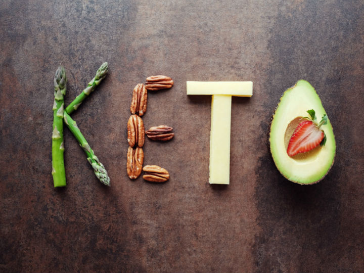

Sito Ufficiale della Dieta Dukan | Dieta n 1 in Francia | Dieta Pierre Dukan | Coaching snellezza personalizzato, dimagrire facilmente | Dieta Dukan
2021.04.30 14:00
Il mio spazio personale
Se non hai un profilo, calcola il tuo Giusto Peso
Dimagrire con il metodo Dukan 1 metodo, 2 soluzioni Pierre Dukan Il metodo classico La scala nutrizionale I principi di base Il Giusto Peso I 100 alimenti Dukan Le 4 fasi della Dieta Dukan I consigli Dukan Cucinare Dukan Iniziare la Dieta Dukan Le 14 chiavi del coaching I 100 alimenti Dukan
Leggi tutto
Coaching Classico Interattivo e quotidiano Il coaching classico Il coaching su misura Il coaching stabilizzazione Le chiavi del coaching Personalizzazione Interattività quotidiana L'appartamento dimagrante Abbonnarsi al Coaching Il coaching è fatto per me? Quanto costa? Come iscriversi?Calcola il tuo Giusto Peso
e scopri il tuo
programma personalizzato
Calcolo
Coaching scala nutrizionale Interattivo e quotidiano Il programma Scala La scala e il consolidamento Il coaching stabilizzazione Strumenti del coaching La personalizzazione Interattività quotidiana Lo spazio privato Abbonnarsi al Coaching Il coaching è fatto per me? Quanto costa? Come iscriversi? Le coaching au service
de votre réussite
Leggi tutto
Attualità e Dossier La newsletter Focus sulla nutrizione Il segreto per dimagrire Il nuovo menu del mese Il dossier del mese Vedere, leggere, fare Il Forum Le storie di successo Le news prodotti Dukan Dizionario Dukan Alimentazione Dukan La crusca d'avena Il konjac Gli studi scientifici Il tuo IMC I super alimenti I semi di ChiaIl menu del mese
Delle ricette
facili e deliziose
Vado subito
Boutique il forum DietaDukan.it: Il 1° sito di coaching dimagrante personalizzato
Il metodo Dukan
Ha fatto dimagrire migliaia di persone
Scopri i principi fondamentali del metodo
Per saperne di più
I 100 alimenti Dukan
La lista dei 100 alimenti a volontà
Potrai mangiare quanto vuoi senza frustrazioni.
Per saperne di più
Le storie di successo
La storia di Christine
Ho perso 50 kg con la dieta Dukan!
Per saperne di più
Il metodo Dukan: una dieta rapida, efficace e naturale.
Il medico Pierre Dukan ha dedicato la sua esperienza di nutrizionista a mettere a punto il miglior metodo per perdere peso senza riprenderlo. Con la dieta Dukan e la sua lista di 100 alimenti autorizzati a volontà, potrai dimagrire senza contare le calorie e senza sensazione di fame. La dieta Dukan è una dieta iperproteica, sana e naturale. Oggi, saper dimagrire è alla portata di tutti. Il metodo Dukan ti permetterà di stabilizzare il tuo Giusto Peso a vita. Il calcolo del Giusto Peso è gratuito.
Il metodo Dukan è una dieta dimagrante iperproteica, strutturata in quattro fasi.
Due fasi per dimagrire rapidamente e raggiungere il proprio Giusto Peso: una fase d’attacco breve per una perdita di peso rapida (72 proteine pure: carne, pesce, uova, ecc...) e la fase di crociera (più di 28 verdure) per raggiungere il proprio Giusto Peso. Due fasi per non riprendere peso: la fase di consolidamento e la fase di stabilizzazione. Nessun effetto yoyo con le 4 fasi della dieta Dukan. Più di 800 ricette Dukan per una dieta golosa.
Coaching Dukan: la libertà di dimagrire.
Impara a regolare la tua alimentazione senza riprendere peso. La proteina è il motore della lotta contro il sovrappeso, la sua azione è coadiuvata dall’efficacia della crusca d’avena. Il metodo Dukan è una dieta iperproteica che ti aiuterà a ridurre la pancia ed a ritrovare una silhouette armoniosa. Dukan, una dieta facile da seguire per dimagrire in fretta e mangiare senza contare le calorie. Il piacere del sapore con più di 800 ricette Dukan, dalla minestra al dessert, nell'ambito del coaching Dukan.
FAQ Menzioni legali Contattaci Stampa Condizioni generali d'utilizzo Affiliazione Diritto di recesso